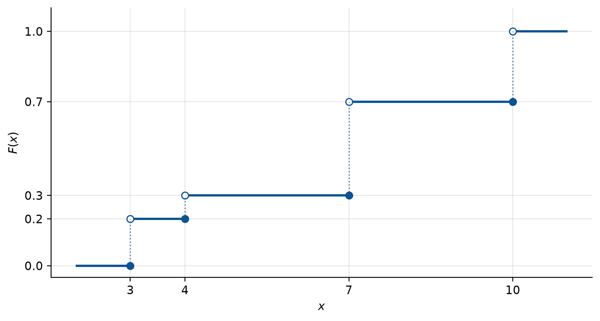
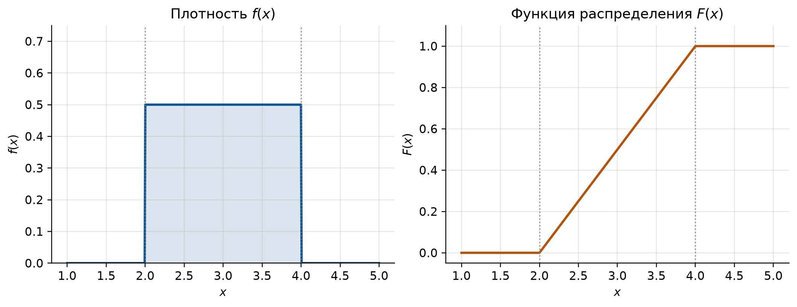
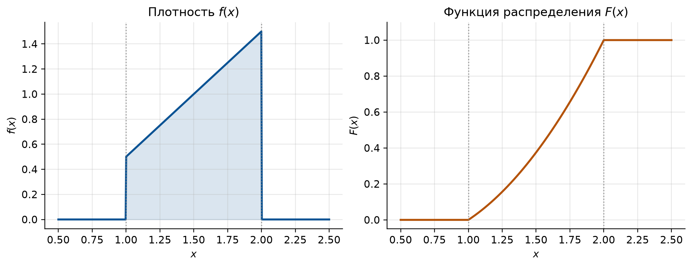
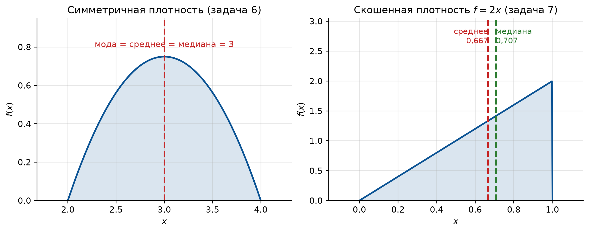
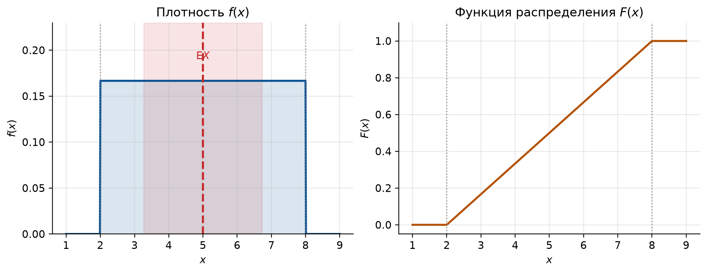
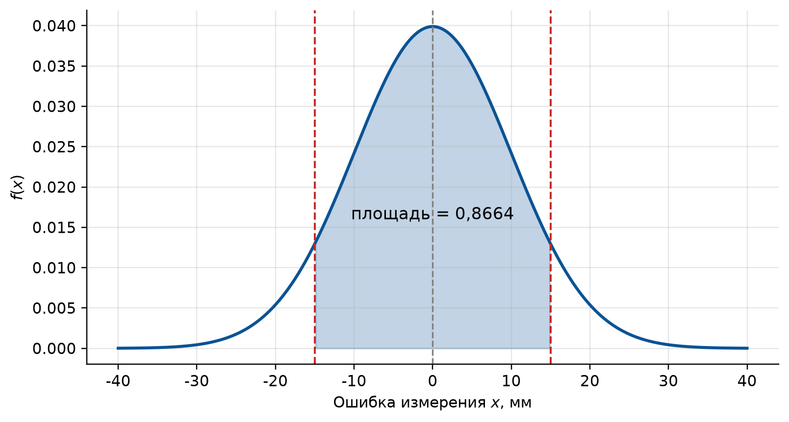
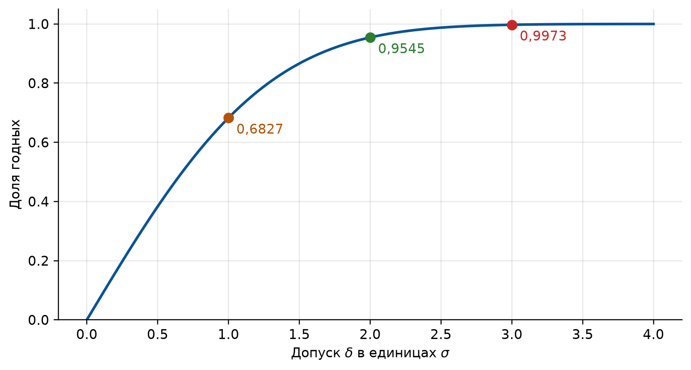
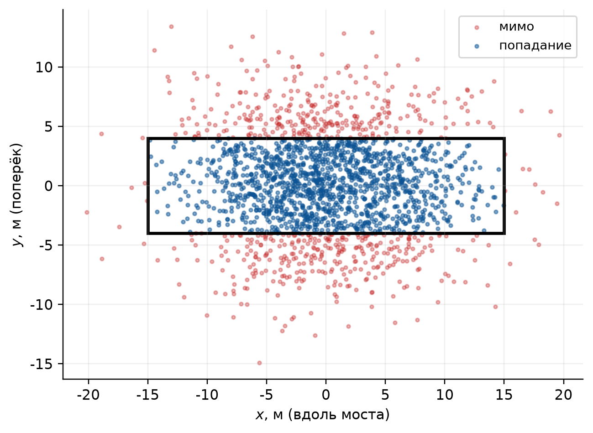

import numpy as np
import matplotlib.pyplot as plt
import sympy as sp
from math import erf, pi, sqrt
# Оформление графиков: шрифт с кириллицей и палитра, различимая при печати
PALETTE = ["#0b5394", "#b45309", "#2e7d32", "#7b1fa2", "#c62828", "#00838f"]
plt.rcParams.update({
"font.family": "sans-serif",
"font.sans-serif": ["DejaVu Sans", "Liberation Sans", "Noto Sans", "sans-serif"],
"axes.unicode_minus": False,
"axes.prop_cycle": plt.cycler(color=PALETTE),
"axes.spines.top": False,
"axes.spines.right": False,
"axes.grid": True,
"grid.alpha": 0.3,
"figure.dpi": 110,
"figure.constrained_layout.use": True,
})
# Генератор случайных чисел с фиксированным зерном: результаты воспроизводимы
rng = np.random.default_rng(2026)
# Символьная переменная для всех выкладок с плотностями
x = sp.Symbol("x", real=True)
def describe(expr, a, b):
"""Контроль нормировки, M(X), D(X) и sigma(X) для плотности expr на (a, b).
Всё считается точно (sympy), поэтому дроби остаются дробями.
Возвращает словарь; ключ "норм" должен быть равен 1 — это первая проверка
любой задачи на плотность.
"""
total = sp.integrate(expr, (x, a, b))
m = sp.simplify(sp.integrate(x * expr, (x, a, b)))
m2 = sp.simplify(sp.integrate(x**2 * expr, (x, a, b)))
d = sp.simplify(m2 - m**2)
return {"норм": total, "M(X)": m, "M(X^2)": m2, "D(X)": d,
"sigma": sp.simplify(sp.sqrt(d))}
def moments(expr, a, b, kmax=4):
"""Начальные nu_k и центральные mu_k моменты плотности expr на (a, b).
Центральные считаются прямым интегрированием, а не по формулам перехода, —
чтобы формулы перехода можно было проверить независимо.
"""
nu = [sp.integrate(x**k * expr, (x, a, b)) for k in range(1, kmax + 1)]
mu = [sp.integrate((x - nu[0]) ** k * expr, (x, a, b)) for k in range(1, kmax + 1)]
return nu, mu
def median(expr, a, b):
"""Медиана: корень уравнения int_a^m f(t) dt = 1/2, лежащий внутри (a, b)."""
m = sp.Symbol("m", real=True)
roots = sp.solve(sp.Eq(sp.integrate(expr, (x, a, m)), sp.Rational(1, 2)), m)
return [r for r in roots if r.is_real and a <= r <= b]
def laplace_phi(t):
"""Функция Лапласа в соглашении Гмурмана: Ф(t) = (1/sqrt(2pi)) int_0^t e^(-z^2/2) dz.
Это НЕ функция распределения: Ф(0) = 0, Ф(+бесконечность) = 0,5.
Связь со стандартной нормальной F: Ф(t) = F(t) - 0,5.
"""
return 0.5 * erf(t / sqrt(2))
def normal_pdf(t, a, sigma):
"""Плотность нормального закона с параметрами a и sigma."""
return np.exp(-((t - a) ** 2) / (2 * sigma**2)) / (sigma * np.sqrt(2 * np.pi))
def step_cdf(ax, values, probs, color=PALETTE[0]):
"""График F(x) = P(X < x) дискретной величины.
Важно: определение со СТРОГИМ неравенством, поэтому F непрерывна слева.
В точке скачка закрашенный кружок стоит на НИЖНЕЙ ступени (значение
достигается), пустой — на верхней.
"""
cum = np.concatenate(([0.0], np.cumsum(probs)))
lo, hi = values[0] - 1, values[-1] + 1
edges = [lo] + list(values) + [hi]
for i in range(len(edges) - 1):
ax.hlines(cum[i], edges[i], edges[i + 1], color=color, lw=2)
if i > 0:
ax.plot([edges[i]], [cum[i - 1]], "o", color=color, ms=6) # F(x_i) = старое, нижнее значение
ax.plot([edges[i]], [cum[i]], "o", mfc="white", mec=color, ms=6)
ax.vlines(edges[i], cum[i - 1], cum[i], color=color, ls=":", lw=1.1, alpha=0.7)
ax.set_xticks(list(values))
ax.set_yticks(list(cum))
ax.set_ylim(-0.05, 1.1)
ax.set_ylabel("$F(x)$")
def plot_f_and_cdf(xs, fs, cdfs, support, fig_size=(9.5, 3.6)):
"""Две панели: слева плотность, справа функция распределения.
support = (a, b) отмечается вертикальными пунктирами на обеих панелях.
"""
fig, axes = plt.subplots(1, 2, figsize=fig_size)
axes[0].plot(xs, fs, lw=2, color=PALETTE[0])
axes[0].fill_between(xs, 0, fs, alpha=0.15, color=PALETTE[0])
axes[0].set_title("Плотность $f(x)$")
axes[0].set_ylabel("$f(x)$")
axes[1].plot(xs, cdfs, lw=2, color=PALETTE[1])
axes[1].set_title("Функция распределения $F(x)$")
axes[1].set_ylabel("$F(x)$")
axes[1].set_ylim(-0.05, 1.1)
for ax in axes:
for edge in support:
ax.axvline(edge, color="gray", ls=":", lw=1.1, alpha=0.8)
ax.set_xlabel("$x$")
return fig, axes
def shade_normal(ax, a, sigma, lo, hi, color=PALETTE[0], span=4.0):
"""Нормальная кривая с закрашенной областью [lo, hi]; возвращает вероятность."""
grid = np.linspace(a - span * sigma, a + span * sigma, 600)
ax.plot(grid, normal_pdf(grid, a, sigma), lw=2, color=color)
inside = grid[(grid >= lo) & (grid <= hi)]
ax.fill_between(inside, 0, normal_pdf(inside, a, sigma), alpha=0.25, color=color)
ax.axvline(a, color="gray", ls="--", lw=1.1)
ax.set_xlabel("$x$")
ax.set_ylabel("$f(x)$")
return laplace_phi((hi - a) / sigma) - laplace_phi((lo - a) / sigma)3 Семинар 3. Непрерывные случайные величины
Теория вероятностей и математическая статистика · НИЯУ МИФИ
Скачать PDF-раздатку этого семинара
3.1 Код для этой главы
Все импорты и функции, которые используются в примерах главы, собраны в одной ячейке. Выполните её первой — остальные ячейки опираются на неё.
3.2 Краткая сводка
Непрерывной называют случайную величину, возможные значения которой заполняют целый промежуток — конечный или бесконечный. Перечислить их, как у дискретной величины, нельзя, поэтому ряд распределения не годится и нужен другой способ задать закон.
3.2.1 Функция распределения
Функцией распределения называют \[ F(x) = \Prob(X < x). \tag{3.1}\]
Важное уведомление
Неравенство строгое. Гмурман определяет \(F\) через \(\Prob(X < x)\), а не \(\Prob(X \leqslant x)\). Для непрерывной величины разницы нет, а для дискретной есть: \(F\) оказывается непрерывной слева, и в точке скачка значение берётся нижнее. В задаче 1 это видно на графике.
Свойства: \(0 \leqslant F(x) \leqslant 1\); \(F\) не убывает; \(F(-\infty) = 0\), \(F(+\infty) = 1\). Главное рабочее следствие — \[ \Prob(a < X < b) = F(b) - F(a), \tag{3.2}\] то есть вероятность попасть в интервал есть приращение \(F\) на нём.
Для непрерывной величины \(\Prob(X = x_1) = 0\): отдельное значение имеет нулевую вероятность. Поэтому в Уравнение 3.2 знаки \(<\) и \(\leqslant\) можно менять как угодно — ответ не изменится. Это не значит, что событие невозможно; это значит, что «попасть ровно в точку» — событие нулевой вероятности.
3.2.2 Плотность распределения
Плотностью распределения называют производную функции распределения: \[ f(x) = F'(x), \qquad F(x) = \int_{-\infty}^{x} f(t)\,dt. \tag{3.3}\]
Вероятность считается площадью под кривой: \[ \Prob(a < X < b) = \int_a^b f(x)\,dx. \tag{3.4}\]
Важное уведомление
Контроль. Всегда \(f(x) \geqslant 0\) и \[ \int_{-\infty}^{\infty} f(x)\,dx = 1. \tag{3.5}\] Это аналог условия \(\sum p_i = 1\) из семинара 2: там сумма, здесь интеграл. Проверяйте Уравнение 3.5 первым делом — она ловит почти любую ошибку в выкладке и сразу даёт неизвестную постоянную, если та есть в условии.
3.2.3 Числовые характеристики
Всюду ниже интегралы берутся по всем возможным значениям \(X\) (если они заполняют интервал \((a, b)\) — по нему):
\[ \E X = \int_{-\infty}^{\infty} x f(x)\,dx, \qquad \E\big[\varphi(X)\big] = \int_{-\infty}^{\infty} \varphi(x) f(x)\,dx. \tag{3.6}\]
\[ \Var X = \int_{-\infty}^{\infty} \big[x - \E X\big]^2 f(x)\,dx = \int_{-\infty}^{\infty} x^2 f(x)\,dx - \big[\E X\big]^2, \qquad \sigma(X) = \sqrt{\Var X}. \tag{3.7}\]
Уведомление
Обозначения. В задачнике Гмурмана пишут \(M(X)\) и \(D(X)\) — это ровно то же самое, что \(\E X\) и \(\Var X\) здесь. Правая форма в Уравнение 3.7 — рабочая: считать \(\E X\) и \(\E X^2\), а потом вычесть, почти всегда проще, чем интегрировать квадрат разности.
Мода \(M_0(X)\) — точка локального максимума плотности. Медиана \(M_e(X)\) — значение, делящее площадь пополам: \(\Prob(X < M_e) = \Prob(X > M_e) = 1/2\). Ни та, ни другая может не существовать или быть не единственной; если кривая распределения симметрична относительно прямой \(x = C\), то \(\E X = M_0 = M_e = C\).
3.2.4 Моменты
\[ \nu_k = \int x^k f(x)\,dx \quad (\text{начальный}), \qquad \mu_k = \int \big[x - \E X\big]^k f(x)\,dx \quad (\text{центральный}). \tag{3.8}\]
Очевидно \(\nu_1 = \E X\), \(\mu_1 = 0\), \(\mu_2 = \Var X\). Центральные моменты выражаются через начальные: \[ \mu_2 = \nu_2 - \nu_1^2, \qquad \mu_3 = \nu_3 - 3\nu_2\nu_1 + 2\nu_1^3, \qquad \mu_4 = \nu_4 - 4\nu_3\nu_1 + 6\nu_2\nu_1^2 - 3\nu_1^4. \tag{3.9}\]
3.2.5 Два распределения, которые надо знать наизусть
Равномерное на \((a, b)\): \[ f(x) = \frac{1}{b-a}, \qquad F(x) = \frac{x-a}{b-a}, \qquad \E X = \frac{a+b}{2}, \qquad \Var X = \frac{(b-a)^2}{12}. \tag{3.10}\]
Нормальное с параметрами \(a\) и \(\sigma\): \[ f(x) = \frac{1}{\sigma\sqrt{2\pi}}\, e^{-(x-a)^2/(2\sigma^2)}, \qquad \E X = a, \quad \sigma(X) = \sigma. \tag{3.11}\]
Интеграл от Уравнение 3.11 в элементарных функциях не берётся, поэтому вводят функцию Лапласа \[ \Phi(t) = \frac{1}{\sqrt{2\pi}}\int_0^t e^{-z^2/2}\,dz \tag{3.12}\] и пользуются таблицей её значений. Через неё \[ \Prob(\alpha < X < \beta) = \Phi\!\left(\frac{\beta - a}{\sigma}\right) - \Phi\!\left(\frac{\alpha - a}{\sigma}\right), \qquad \Prob\big(|X - a| < \delta\big) = 2\Phi\!\left(\frac{\delta}{\sigma}\right). \tag{3.13}\]
Важное уведомление
\(\Phi\) — не функция распределения. У функции Лапласа Уравнение 3.12 интеграл идёт от нуля: \(\Phi(0) = 0\), \(\Phi(+\infty) = 0{,}5\), и она нечётна, \(\Phi(-t) = -\Phi(t)\). В таблицах и пакетах часто встречается другая функция — \(F_0(t) = 0{,}5 + \Phi(t)\), у которой \(F_0(0) = 0{,}5\). Перед тем как брать число из таблицы, посмотрите, чему равно её значение в нуле.
Правило трёх сигм. При \(\delta = 3\sigma\) из Уравнение 3.13 \[ \Prob\big(|X - a| < 3\sigma\big) = 2\Phi(3) = 0{,}9973, \tag{3.14}\] то есть практически все значения нормальной величины лежат в интервале \((a - 3\sigma,\ a + 3\sigma)\) шириной \(6\sigma\).
3.3 Блок A. Разминка: функция распределения и плотность
3.3.1 Задача 1 (Гмурман, гл. 6 § 1, № 261)
Дискретная случайная величина задана законом распределения
| \(X\) | 3 | 4 | 7 | 10 |
|---|---|---|---|---|
| \(p\) | 0,2 | 0,1 | 0,4 | 0,3 |
Найти функцию распределения и построить её график.
СоветРешение
Функция распределения определена для любой случайной величины, не только для непрерывной, — и с дискретной проще всего понять, что она означает. По Уравнение 3.1 надо для каждого \(x\) сложить вероятности всех значений строго левее \(x\).
Пока \(x \leqslant 3\), левее ничего нет: \(F(x) = 0\). Как только \(x\) переходит через 3, добавляется \(p = 0{,}2\); после 4 — ещё \(0{,}1\); после 7 — ещё \(0{,}4\); после 10 набирается вся единица: \[ F(x) = \begin{cases} 0, & x \leqslant 3, \\ 0{,}2, & 3 < x \leqslant 4, \\ 0{,}3, & 4 < x \leqslant 7, \\ 0{,}7, & 7 < x \leqslant 10, \\ 1, & x > 10. \end{cases} \]
График — лестница: горизонтальные ступени и скачки в точках 3, 4, 7, 10. Высота каждого скачка равна вероятности соответствующего значения — это и есть способ прочитать ряд распределения обратно по графику \(F\).
fig, ax = plt.subplots(figsize=(7.2, 3.8))
step_cdf(ax, [3, 4, 7, 10], [0.2, 0.1, 0.4, 0.3])
ax.set_xlabel("$x$")
plt.show()
ПредупреждениеТипичная ошибка
Написать \(F(7) = 0{,}7\). Нет: \(F(7) = \Prob(X < 7) = 0{,}2 + 0{,}1 = 0{,}3\), потому что само значение 7 в событие \(\{X < 7\}\) не входит. Значение \(0{,}7\) функция принимает лишь правее семёрки. У непрерывной величины эта разница исчезает — ровно потому, что \(\Prob(X = x_1) = 0\).
УведомлениеДля самопроверки
Та же задача для ряда \(X\): 2, 4, 7 с \(p\): 0,5; 0,2; 0,3. Ответ: \(F(x) = 0\); \(0{,}5\); \(0{,}7\); \(1\) на промежутках \(x \leqslant 2\); \(2 < x \leqslant 4\); \(4 < x \leqslant 7\); \(x > 7\).
3.3.2 Задача 2 (Гмурман, гл. 6 § 1, № 256)
Случайная величина \(X\) задана функцией распределения \[ F(x) = \begin{cases} 0, & x \leqslant 2, \\ 0{,}5x - 1, & 2 < x \leqslant 4, \\ 1, & x > 4. \end{cases} \] Найти вероятность того, что в результате испытания \(X\) примет значение: а) меньшее \(0{,}2\); б) меньшее трёх; в) не меньшее трёх; г) не меньшее пяти.
СоветРешение
Сначала проверим, что функция вообще годится: \(F(2) = 0\), \(F(4) = 1\), между ними растёт линейно — всё сходится. Дальше нужна только Уравнение 3.1: значение \(F\) в точке и есть вероятность оказаться левее неё.
а) Точка \(0{,}2\) лежит в области, где \(F \equiv 0\): \[\Prob(X < 0{,}2) = F(0{,}2) = 0.\]
б) Точка 3 попадает на средний кусок: \[\Prob(X < 3) = F(3) = 0{,}5\cdot 3 - 1 = 0{,}5.\]
в) Событие \(\{X \geqslant 3\}\) противоположно событию \(\{X < 3\}\): \[\Prob(X \geqslant 3) = 1 - \Prob(X < 3) = 1 - 0{,}5 = 0{,}5.\]
г) Так же, но \(F(5) = 1\): \[\Prob(X \geqslant 5) = 1 - F(5) = 1 - 1 = 0.\]
Последний ответ разумен: все возможные значения лежат на \((2, 4)\), правее четвёрки величине быть негде.
grid = np.linspace(1.0, 5.0, 500)
cdf_vals = np.clip(0.5 * grid - 1, 0, 1)
pdf_vals = np.where((grid > 2) & (grid < 4), 0.5, 0.0)
fig, axes = plot_f_and_cdf(grid, pdf_vals, cdf_vals, support=(2, 4))
axes[0].set_ylim(0, 0.75)
plt.show()
ПредупреждениеТипичная ошибка
Считать, что «не меньшее трёх» — это \(1 - F(3)\) только для непрерывной величины, и добавлять \(\Prob(X = 3)\) «на всякий случай». Для непрерывной величины \(\Prob(X = 3) = 0\), и добавлять нечего; но если бы величина была дискретной, как в задаче 1, это слагаемое было бы существенным. Разница между \(\Prob(X < 3)\) и \(\Prob(X \leqslant 3)\) — ровно \(\Prob(X = 3)\).
3.3.3 Задача 3 (Гмурман, гл. 6 § 2, № 269)
Задана плотность распределения непрерывной случайной величины \(X\): \[ f(x) = \begin{cases} 0, & x \leqslant 1, \\ x - 1/2, & 1 < x \leqslant 2, \\ 0, & x > 2. \end{cases} \] Найти функцию распределения \(F(x)\).
СоветРешение
Сначала контроль Уравнение 3.5. Условие задачи ничего не просит проверять, но если плотность не нормирована, дальше считать бессмысленно: \[ \int_1^2 \left(x - \frac12\right) dx = \left[\frac{x^2}{2} - \frac x2\right]_1^2 = (2 - 1) - \left(\frac12 - \frac12\right) = 1. \quad\checkmark \]
Теперь по Уравнение 3.3 интегрируем плотность слева направо. Ниже единицы интегрировать нечего, поэтому \(F(x) = 0\) при \(x \leqslant 1\). На среднем участке \[ F(x) = \int_1^x \left(t - \frac12\right) dt = \left[\frac{t^2}{2} - \frac t2\right]_1^x = \frac{x^2 - x}{2}. \] Правее двойки плотность снова нулевая, и \(F\) больше не растёт. Итого \[ F(x) = \begin{cases} 0, & x \leqslant 1, \\ (x^2 - x)/2, & 1 < x \leqslant 2, \\ 1, & x > 2. \end{cases} \]
Сшивка — вторая проверка: \(F(1) = 0\) и \(F(2) = (4-2)/2 = 1\). Функция выходит из нуля и приходит ровно в единицу, разрывов нет.
Проверка: интеграл от плотности и обратный переход \(F' = f\) в sympy.
f3 = x - sp.Rational(1, 2)
F3 = sp.integrate(f3, (x, 1, x))
print("норм =", sp.integrate(f3, (x, 1, 2)))
print("F(x) =", sp.simplify(F3), " F(1) =", F3.subs(x, 1), " F(2) =", F3.subs(x, 2))
print("F'(x) =", sp.diff(F3, x), " — совпало с f(x)")норм = 1
F(x) = x*(x - 1)/2 F(1) = 0 F(2) = 1
F'(x) = x - 1/2 — совпало с f(x)grid = np.linspace(0.5, 2.5, 500)
pdf_vals = np.where((grid > 1) & (grid <= 2), grid - 0.5, 0.0)
cdf_vals = np.clip((grid**2 - grid) / 2, 0, 1)
cdf_vals[grid <= 1] = 0.0
fig, axes = plot_f_and_cdf(grid, pdf_vals, cdf_vals, support=(1, 2))
plt.show()
ПредупреждениеТипичная ошибка
Написать \(F(x) = x^2/2 - x/2 + C\) и оставить \(C\) неопределённой или взять \(C = 0\) «по умолчанию». Постоянная определяется условием сшивки \(F(1) = 0\): интегрировать надо от начала носителя, а не неопределённо.
3.3.4 Задача 4 (Гмурман, гл. 6 § 3, № 279)
Случайная величина \(X\) задана плотностью распределения \(f(x) = c(x^2 + 2x)\) в интервале \((0, 1)\); вне этого интервала \(f(x) = 0\). Найти: а) параметр \(c\); б) математическое ожидание величины \(X\).
СоветРешение
а) Постоянную всегда даёт Уравнение 3.5 — других условий на неё нет: \[ c\int_0^1 (x^2 + 2x)\,dx = c\left(\frac13 + 1\right) = \frac{4c}{3} = 1, \qquad c = \frac34. \]
б) Теперь плотность известна полностью, и по Уравнение 3.6 \[ \E X = \frac34 \int_0^1 x(x^2 + 2x)\,dx = \frac34 \int_0^1 (x^3 + 2x^2)\,dx = \frac34\left(\frac14 + \frac23\right) = \frac34 \cdot \frac{11}{12} = \frac{11}{16} = 0{,}6875. \]
Ответ разумен? Возможные значения лежат на \((0, 1)\), значит и среднее обязано лежать внутри — \(0{,}6875\) лежит. Причём правее середины: плотность \(c(x^2+2x)\) растёт, большие значения вероятнее.
Проверка: точные дроби и контроль нормировки.
c = sp.symbols("c", positive=True)
c_val = sp.solve(sp.Eq(sp.integrate(c * (x**2 + 2 * x), (x, 0, 1)), 1), c)[0]
print("c =", c_val)
print(describe(c_val * (x**2 + 2 * x), 0, 1))c = 3/4
{'норм': 1, 'M(X)': 11/16, 'M(X^2)': 21/40, 'D(X)': 67/1280, 'sigma': sqrt(335)/80}3.4 Блок B. Математическое ожидание, дисперсия, моменты
3.4.1 Задача 5 (Гмурман, гл. 6 § 3, № 296)
Случайная величина \(X\) в интервале \((0, 5)\) задана плотностью распределения \(f(x) = (2/25)x\); вне этого интервала \(f(x) = 0\). Найти дисперсию \(X\).
СоветРешение
Контроль Уравнение 3.5: \(\int_0^5 \frac{2}{25}x\,dx = \frac{2}{25}\cdot\frac{25}{2} = 1\). \(\checkmark\)
Дисперсию считаем по правой форме Уравнение 3.7 — через два интеграла: \[ \E X = \frac{2}{25}\int_0^5 x^2\,dx = \frac{2}{25}\cdot\frac{125}{3} = \frac{10}{3}, \] \[ \E X^2 = \frac{2}{25}\int_0^5 x^3\,dx = \frac{2}{25}\cdot\frac{625}{4} = \frac{25}{2}, \] \[ \Var X = \E X^2 - \big[\E X\big]^2 = \frac{25}{2} - \frac{100}{9} = \frac{225 - 200}{18} = \frac{25}{18} \approx 1{,}39. \] Отсюда \(\sigma(X) = 5/(3\sqrt2) \approx 1{,}18\).
Проверка на здравый смысл. Величина живёт на отрезке длины 5, а \(\sigma \approx 1{,}2\) — примерно четверть этой длины. Так и должно быть: у любого распределения на отрезке длины \(L\) среднее квадратическое отклонение не превосходит \(L/2\), а у «разумных» оказывается порядка \(L/4\).
Проверка: точные дроби плюс симуляция методом обратной функции.
f5 = sp.Rational(2, 25) * x
print(describe(f5, 0, 5))
# F(x) = x^2/25, значит X = 5*sqrt(U) при U ~ R(0,1) — метод обратной функции
sample = 5 * np.sqrt(rng.random(400_000))
print(f"\nсимуляция: M = {sample.mean():.4f} (точно {10/3:.4f}),"
f" D = {sample.var():.4f} (точно {25/18:.4f})"){'норм': 1, 'M(X)': 10/3, 'M(X^2)': 25/2, 'D(X)': 25/18, 'sigma': 5*sqrt(2)/6}
симуляция: M = 3.3279 (точно 3.3333), D = 1.3917 (точно 1.3889)3.4.2 Задача 6 (Гмурман, гл. 6 § 3, № 286)
Случайная величина \(X\) в интервале \((2, 4)\) задана плотностью распределения \(f(x) = -\dfrac34 x^2 + \dfrac92 x - 6\); вне этого интервала \(f(x) = 0\). Найти моду, математическое ожидание и медиану величины \(X\).
СоветРешение
Считать три интеграла не придётся: всё даёт выделение полного квадрата. \[ -\frac34 x^2 + \frac92 x - 6 = -\frac34\left(x^2 - 6x + 8\right) = -\frac34\left[(x - 3)^2 - 1\right] = -\frac34 (x - 3)^2 + \frac34 . \]
Это парабола ветвями вниз с вершиной в точке \(x = 3\), то есть \[M_0(X) = 3.\]
Кривая симметрична относительно прямой \(x = 3\), а отрезок \((2, 4)\) расположен симметрично относительно неё же. Значит и центр тяжести площади, и точка, делящая площадь пополам, лежат в той же тройке: \[\E X = 3, \qquad M_e(X) = 3.\]
Контроль Уравнение 3.5: \(\int_2^4 \left[-\frac34(x-3)^2 + \frac34\right] dx = -\frac34\cdot\frac23 + \frac34\cdot 2 = -\frac12 + \frac32 = 1\). \(\checkmark\)
УведомлениеДля самопроверки
Гмурман, № 287: та же задача на \((3, 5)\) с \(f(x) = -\frac34 x^2 + 6x - \frac{45}{4}\). Ответ: \(-\frac34(x-4)^2 + \frac34\), и всё равно \(4\).
Когда три характеристики расходятся. Совпадение \(M_0 = \E X = M_e\) — следствие симметрии, а не общее правило. Для скошенной плотности все три разные, и на графике ниже это видно рядом.
f6 = -sp.Rational(3, 4) * x**2 + sp.Rational(9, 2) * x - 6
print("полный квадрат:", sp.simplify(f6 - (-sp.Rational(3, 4) * (x - 3)**2 + sp.Rational(3, 4))))
print(describe(f6, 2, 4))
print("медиана:", median(f6, 2, 4))
f6b = 2 * x # скошенная плотность для сравнения
print("\nдля f = 2x на (0,1): M =", describe(f6b, 0, 1)["M(X)"],
" медиана =", median(f6b, 0, 1), " мода — на краю, внутри максимума нет")полный квадрат: 0
{'норм': 1, 'M(X)': 3, 'M(X^2)': 46/5, 'D(X)': 1/5, 'sigma': sqrt(5)/5}
медиана: [3]
для f = 2x на (0,1): M = 2/3 медиана = [sqrt(2)/2] мода — на краю, внутри максимума нетfig, axes = plt.subplots(1, 2, figsize=(9.8, 3.8))
g1 = np.linspace(1.8, 4.2, 400)
y1 = np.where((g1 > 2) & (g1 < 4), -0.75 * (g1 - 3) ** 2 + 0.75, 0.0)
axes[0].plot(g1, y1, lw=2, color=PALETTE[0])
axes[0].fill_between(g1, 0, y1, alpha=0.15, color=PALETTE[0])
axes[0].axvline(3, color=PALETTE[4], lw=2, ls="--")
axes[0].annotate("мода = среднее = медиана = 3", xy=(3, 0.80), ha="center",
fontsize=10, color=PALETTE[4])
axes[0].set_title("Симметричная плотность (задача 6)")
axes[0].set_ylim(0, 0.95)
g2 = np.linspace(-0.1, 1.1, 400)
y2 = np.where((g2 > 0) & (g2 < 1), 2 * g2, 0.0)
axes[1].plot(g2, y2, lw=2, color=PALETTE[0])
axes[1].fill_between(g2, 0, y2, alpha=0.15, color=PALETTE[0])
for pos, name, col, dy, ha in ((2 / 3, "среднее\n0,667", PALETTE[4], 2.90, "right"),
(sqrt(2) / 2, "медиана\n0,707", PALETTE[2], 2.90, "left")):
axes[1].axvline(pos, color=col, lw=2, ls="--")
axes[1].annotate(name, xy=(pos, dy), ha=ha, va="top", fontsize=9.5, color=col)
axes[1].set_title("Скошенная плотность $f = 2x$ (задача 7)")
axes[1].set_ylim(0, 3.05)
for ax in axes:
ax.set_xlabel("$x$")
ax.set_ylabel("$f(x)$")
plt.show()
ПредупреждениеТипичная ошибка
Искать моду как точку, где \(f' = 0\), и не проверять, лежит ли она внутри носителя. У плотности \(f = 2x\) на \((0, 1)\) производная нигде не обращается в нуль, максимум достигался бы в точке \(x = 1\), но она не принадлежит открытому интервалу — моды нет. Так же устроены задачи 285 и 288 задачника.
3.4.3 Задача 7 (Гмурман, гл. 6 § 3, № 306)
Случайная величина \(X\) задана плотностью распределения \(f(x) = 2x\) в интервале \((0, 1)\); вне этого интервала \(f(x) = 0\). Найти начальные и центральные моменты первого, второго, третьего и четвёртого порядков.
СоветРешение
Начальные моменты по Уравнение 3.8 считаются одной формулой: \[ \nu_k = \int_0^1 x^k\cdot 2x\,dx = 2\int_0^1 x^{k+1}\,dx = \frac{2}{k+2}, \] откуда \[ \nu_1 = \frac23, \qquad \nu_2 = \frac12, \qquad \nu_3 = \frac25, \qquad \nu_4 = \frac13 . \] Заодно \(\nu_1 = \E X = 2/3\), а \(\nu_0 = 1\) — это снова Уравнение 3.5.
Центральные удобнее не интегрировать, а получить из Уравнение 3.9. Первый равен нулю всегда: \[\mu_1 = 0,\] \[\mu_2 = \nu_2 - \nu_1^2 = \frac12 - \frac49 = \frac{1}{18} = \Var X,\] \[\mu_3 = \nu_3 - 3\nu_2\nu_1 + 2\nu_1^3 = \frac25 - 3\cdot\frac12\cdot\frac23 + 2\cdot\frac{8}{27} = -\frac{1}{135},\] \[\mu_4 = \nu_4 - 4\nu_3\nu_1 + 6\nu_2\nu_1^2 - 3\nu_1^4 = \frac13 - \frac{16}{15} + \frac43 - \frac{16}{27} = \frac{1}{135}.\]
Зачем они нужны. Третий и четвёртый моменты — это форма распределения: \[ A_s = \frac{\mu_3}{\sigma^3} = -\frac{2\sqrt2}{5} \approx -0{,}57 \quad(\text{асимметрия}), \qquad E_k = \frac{\mu_4}{\sigma^4} - 3 = -\frac35 = -0{,}6 \quad(\text{эксцесс}). \] Знак \(\mu_3 < 0\) означает скос влево: длинный хвост уходит в сторону малых значений, и поэтому среднее \(2/3\) оказалось левее медианы \(\sqrt2/2\) (см. правую панель на рисунке к задаче 6). У нормального закона \(A_s = E_k = 0\) — он и служит точкой отсчёта.
Проверка: центральные моменты считаются двумя способами — прямым интегрированием и по формулам перехода Уравнение 3.9.
nu, mu = moments(2 * x, 0, 1)
link = [sp.Integer(0),
nu[1] - nu[0]**2,
nu[2] - 3 * nu[1] * nu[0] + 2 * nu[0]**3,
nu[3] - 4 * nu[2] * nu[0] + 6 * nu[1] * nu[0]**2 - 3 * nu[0]**4]
print("nu =", nu)
print("mu (интеграл) =", mu)
print("mu (через nu) =", [sp.nsimplify(v) for v in link])
sigma = sp.sqrt(mu[1])
print("\nA_s =", sp.simplify(mu[2] / sigma**3), "=", float(mu[2] / sigma**3))
print("E_k =", sp.simplify(mu[3] / sigma**4 - 3))nu = [2/3, 1/2, 2/5, 1/3]
mu (интеграл) = [0, 1/18, -1/135, 1/135]
mu (через nu) = [0, 1/18, -1/135, 1/135]
A_s = -2*sqrt(2)/5 = -0.565685424949238
E_k = -3/5
ПредупреждениеТипичная ошибка
Считать \(\mu_k\) как \(\int (x - \nu_1)^k f\,dx\) и подставлять в качестве \(\nu_1\) середину интервала вместо математического ожидания. Здесь середина равна \(0{,}5\), а \(\E X = 2/3\); с неверным центром \(\mu_1\) не обратится в нуль, и это первый признак ошибки — всегда проверяйте \(\mu_1 = 0\).
3.4.4 Задача 8 (Гмурман, гл. 6 § 4, № 313 и 315)
Случайная величина \(X\) распределена равномерно в интервале \((a, b)\). Найти её математическое ожидание, дисперсию и среднее квадратическое отклонение.
СоветРешение
Плотность. «Равномерно» означает, что на \((a, b)\) плотность постоянна: \(f(x) = C\). Постоянную даёт Уравнение 3.5: \(C(b - a) = 1\), то есть \(C = 1/(b-a)\) — это Уравнение 3.10.
Математическое ожидание можно не считать: график плотности симметричен относительно середины отрезка, поэтому \[ \E X = \frac{a + b}{2}. \] Прямой счёт даёт то же самое: \(\frac{1}{b-a}\int_a^b x\,dx = \frac{b^2 - a^2}{2(b-a)} = \frac{a+b}{2}\).
Дисперсия — по правой форме Уравнение 3.7: \[ \E X^2 = \frac{1}{b-a}\int_a^b x^2\,dx = \frac{b^3 - a^3}{3(b-a)} = \frac{a^2 + ab + b^2}{3}, \] \[ \Var X = \frac{a^2 + ab + b^2}{3} - \frac{(a+b)^2}{4} = \frac{4a^2 + 4ab + 4b^2 - 3a^2 - 6ab - 3b^2}{12} = \frac{(b - a)^2}{12}, \] \[ \sigma(X) = \frac{b - a}{2\sqrt3} \approx 0{,}289\,(b - a). \]
Что стоит запомнить. Дисперсия зависит только от длины отрезка, а не от его положения — сдвиг величины на константу её не меняет. И \(\sigma\) составляет примерно \(29\%\) длины: для \(R \sim R(0,1)\) это \(\E R = 1/2\), \(\Var R = 1/12\), \(\sigma(R) \approx 0{,}289\).
a_s, L = sp.symbols("a L", real=True, positive=True) # L = b - a, длина отрезка
f8 = 1 / L
m8 = sp.simplify(sp.integrate(x * f8, (x, a_s, a_s + L)))
d8 = sp.factor(sp.simplify(sp.integrate(x**2 * f8, (x, a_s, a_s + L)) - m8**2))
print("M(X) =", m8, " (то есть a + L/2 = (a+b)/2)")
print("D(X) =", d8, " sigma =", sp.simplify(sp.sqrt(d8)), "=", sp.N(sp.sqrt(d8) / L, 4), "* L")M(X) = L/2 + a (то есть a + L/2 = (a+b)/2)
D(X) = L**2/12 sigma = sqrt(3)*L/6 = 0.2887 * Lgrid = np.linspace(1.0, 9.0, 600)
pdf_vals = np.where((grid > 2) & (grid < 8), 1 / 6, 0.0)
cdf_vals = np.clip((grid - 2) / 6, 0, 1)
fig, axes = plot_f_and_cdf(grid, pdf_vals, cdf_vals, support=(2, 8))
sig8 = 6 / (2 * sqrt(3))
axes[0].axvline(5, color=PALETTE[4], lw=2, ls="--")
axes[0].axvspan(5 - sig8, 5 + sig8, color=PALETTE[4], alpha=0.12)
axes[0].annotate("$\\mathsf{E}X$", xy=(5, 0.19), ha="center", color=PALETTE[4], fontsize=10)
axes[0].set_ylim(0, 0.23)
plt.show()
3.5 Блок C. Равномерное и нормальное распределения
3.5.1 Задача 9 (Гмурман, гл. 6 § 4, № 308)
Цена деления шкалы амперметра равна \(0{,}1\) А. Показания округляют до ближайшего целого деления. Найти вероятность того, что при отсчёте будет сделана ошибка, превышающая \(0{,}02\) А.
СоветРешение
Задача про то, как распознать равномерное распределение в тексте. Стрелка может остановиться где угодно между двумя соседними делениями, и ни одно положение не выделено — значит её положение \(X\) внутри деления распределено равномерно на интервале длины \(0{,}1\). По Уравнение 3.10 \[ f(x) = \frac{1}{0{,}1} = 10. \]
Дальше нужно понять, когда ошибка округления превышает \(0{,}02\). Округляют до ближайшего деления, поэтому ошибка — это расстояние до ближайшего конца интервала. Она мала у краёв и велика в середине:
- если \(X < 0{,}02\), округлили вниз, ошибка \(X\) — маленькая;
- если \(X > 0{,}08\), округлили вверх, ошибка \(0{,}1 - X\) — тоже маленькая;
- между ними ошибка больше \(0{,}02\).
Значит искомое событие — это \(0{,}02 < X < 0{,}08\), и по Уравнение 3.4 \[ \Prob(0{,}02 < X < 0{,}08) = \int_{0{,}02}^{0{,}08} 10\,dx = 10 \cdot 0{,}06 = 0{,}6. \]
Считать интеграл тут, конечно, необязательно: у равномерного распределения вероятность — это просто доля длины, \(0{,}06 / 0{,}1 = 0{,}6\).
Проверка: симуляция ста тысяч отсчётов.
reading = rng.uniform(0, 0.1, 200_000)
error = np.minimum(reading, 0.1 - reading) # расстояние до ближайшего деления
print(f"доля ошибок больше 0,02: {np.mean(error > 0.02):.4f} (точно 0,6)")доля ошибок больше 0,02: 0.6000 (точно 0,6)
УведомлениеДля самопроверки
Гмурман, № 309: цена деления \(0{,}2\). Найти вероятность ошибки а) меньшей \(0{,}04\); б) большей \(0{,}05\). Ответ: а) \(0{,}4\); б) \(0{,}5\).
3.5.2 Задача 10 (Гмурман, гл. 6 § 5, № 331)
Производится измерение диаметра вала без систематических (одного знака) ошибок. Случайные ошибки измерения \(X\) подчинены нормальному закону со средним квадратическим отклонением \(\sigma = 10\) мм. Найти вероятность того, что измерение будет произведено с ошибкой, не превосходящей по абсолютной величине 15 мм.
СоветРешение
«Без систематических ошибок» — это и есть условие \(a = \E X = 0\): случайные ошибки одинаково часто бывают в обе стороны. Спрашивают \(\Prob(|X| < 15)\) — отклонение от нуля по модулю, поэтому годится вторая формула Уравнение 3.13: \[ \Prob\big(|X| < \delta\big) = 2\Phi\!\left(\frac{\delta}{\sigma}\right) = 2\Phi\!\left(\frac{15}{10}\right) = 2\Phi(1{,}5). \] По таблице \(\Phi(1{,}5) = 0{,}4332\), откуда \[ \Prob(|X| < 15) = 2\cdot 0{,}4332 = 0{,}8664. \]
Почему не надо вычитать. Общая формула дала бы \(\Phi(1{,}5) - \Phi(-1{,}5)\), но \(\Phi\) нечётна, и \(-\Phi(-1{,}5) = \Phi(1{,}5)\) — отсюда и берётся двойка. Проверяйте себя этим, если забыли формулу.
print(f"Ф(1,5) = {laplace_phi(1.5):.4f} 2Ф(1,5) = {2 * laplace_phi(1.5):.4f}")
print(f"через общую формулу: Ф(1,5) - Ф(-1,5) = "
f"{laplace_phi(1.5) - laplace_phi(-1.5):.4f}")Ф(1,5) = 0.4332 2Ф(1,5) = 0.8664
через общую формулу: Ф(1,5) - Ф(-1,5) = 0.8664fig, ax = plt.subplots(figsize=(7.2, 3.8))
p10 = shade_normal(ax, 0, 10, -15, 15)
for edge in (-15, 15):
ax.axvline(edge, color=PALETTE[4], ls="--", lw=1.3)
ax.annotate(f"площадь = {p10:.4f}".replace(".", ","), xy=(0, 0.016),
ha="center", fontsize=11)
ax.set_xlabel("Ошибка измерения $x$, мм")
plt.show()
ПредупреждениеТипичная ошибка
Взять из таблицы значение функции, у которой \(F_0(0) = 0{,}5\), и всё равно умножить на два — получится больше единицы. Если в вашей таблице \(F_0(1{,}5) = 0{,}9332\), то это \(0{,}5 + \Phi(1{,}5)\), и считать надо \(2F_0(1{,}5) - 1 = 0{,}8664\).
3.5.3 Задача 11 (Гмурман, гл. 6 § 5, № 335)
Деталь, изготовленная автоматом, считается годной, если отклонение контролируемого размера от проектного не превышает 10 мм. Случайные отклонения подчинены нормальному закону со средним квадратическим отклонением \(\sigma = 5\) мм и математическим ожиданием \(a = 0\). Сколько процентов годных деталей изготовляет автомат?
СоветРешение
Схема та же, что в задаче 10, но допуск удобно сразу измерить в сигмах: \(10 = 2\sigma\). Тогда \[ \Prob(|X| < 10) = 2\Phi\!\left(\frac{10}{5}\right) = 2\Phi(2) = 2 \cdot 0{,}4772 = 0{,}9544, \] то есть автомат даёт примерно 95 % годных деталей.
Таблица, которую стоит помнить. Сравните с Уравнение 3.14:
| Допуск | \(\Prob(|X - a| < \delta)\) | Брак |
|---|---|---|
| \(1\sigma\) | 0,6827 | каждая третья деталь |
| \(2\sigma\) | 0,9545 | примерно 1 из 22 |
| \(3\sigma\) | 0,9973 | примерно 1 из 370 |
Отсюда видно, почему нормируют именно «три сигмы»: за пределами такого допуска оказывается настолько мало значений, что событие считают практически невозможным. И обратно — если допуск заказчика равен \(2\sigma\), то около 4,5 % деталей в брак, и уменьшать надо \(\sigma\), а не надеяться на удачу.
for t in (1, 2, 3):
p = 2 * laplace_phi(t)
print(f"{t}σ: P = {p:.4f}, брак = {1 - p:.4f} (1 из {1 / (1 - p):.0f})")1σ: P = 0.6827, брак = 0.3173 (1 из 3)
2σ: P = 0.9545, брак = 0.0455 (1 из 22)
3σ: P = 0.9973, брак = 0.0027 (1 из 370)ts = np.linspace(0, 4, 400)
shares = 2 * np.vectorize(laplace_phi)(ts)
fig, ax = plt.subplots(figsize=(7.2, 3.8))
ax.plot(ts, shares, lw=2, color=PALETTE[0])
for t, col in ((1, PALETTE[1]), (2, PALETTE[2]), (3, PALETTE[4])):
share = 2 * laplace_phi(t)
ax.plot([t], [share], "o", color=col, ms=7)
ax.annotate(f"{share:.4f}".replace(".", ","), xy=(t, share), xytext=(6, -12),
textcoords="offset points", fontsize=10, color=col)
ax.set_xlabel("Допуск $\\delta$ в единицах $\\sigma$")
ax.set_ylabel("Доля годных")
ax.set_ylim(0, 1.05)
plt.show()
3.5.4 Задача 12 (Гмурман, гл. 6 § 5, № 336)
Бомбардировщик, пролетающий вдоль моста, длина которого 30 м и ширина 8 м, сбросил бомбы. Случайные величины \(X\) и \(Y\) (расстояния от вертикальной и горизонтальной оси симметрии моста до места падения бомбы) независимы и распределены нормально со средними квадратическими отклонениями, соответственно равными 6 и 4 м, и математическими ожиданиями, равными нулю. Найти: а) вероятность попадания в мост одной сброшенной бомбы; б) вероятность разрушения моста, если сброшены две бомбы, причём известно, что для разрушения моста достаточно одного попадания.
СоветРешение
а) Мост — прямоугольник. Бомба попала, если она уложилась и по длине, и по ширине. Оси проведены через центр, поэтому условия симметричны: \[ |X| < \frac{30}{2} = 15, \qquad |Y| < \frac{8}{2} = 4. \] Каждое — отклонение от нуля, и каждое считается по Уравнение 3.13: \[ \Prob(|X| < 15) = 2\Phi\!\left(\frac{15}{6}\right) = 2\Phi(2{,}5) = 0{,}9876, \] \[ \Prob(|Y| < 4) = 2\Phi\!\left(\frac{4}{4}\right) = 2\Phi(1) = 0{,}6826. \] Величины независимы, поэтому вероятности перемножаются: \[ p = 0{,}9876 \cdot 0{,}6826 = 0{,}6741. \]
Обратите внимание, где узкое место: вдоль моста промахнуться почти невозможно (\(2{,}5\sigma\) запаса), а поперёк — запросто, ширины хватает лишь на одну сигму. Итоговые две трети целиком определяются поперечным рассеиванием.
б) «Достаточно одного попадания из двух» — это схема «хотя бы один раз» с семинара 1: переходим к противоположному событию «обе мимо»: \[ \Prob(\text{разрушен}) = 1 - (1 - p)^2 = 1 - 0{,}3259^2 = 0{,}8938. \]
Проверка: точные значения функции Лапласа и симуляция.
px = 2 * laplace_phi(15 / 6)
py = 2 * laplace_phi(4 / 4)
p_hit = px * py
print(f"P(|X|<15) = {px:.4f}, P(|Y|<4) = {py:.4f}, p = {p_hit:.4f}")
print(f"две бомбы: 1 - (1 - p)^2 = {1 - (1 - p_hit) ** 2:.4f}")
n_sim = 200_000
xs_sim = rng.normal(0, 6, n_sim)
ys_sim = rng.normal(0, 4, n_sim)
hit = (np.abs(xs_sim) < 15) & (np.abs(ys_sim) < 4)
print(f"\nсимуляция: доля попаданий {hit.mean():.4f}")P(|X|<15) = 0.9876, P(|Y|<4) = 0.6827, p = 0.6742
две бомбы: 1 - (1 - p)^2 = 0.8939
симуляция: доля попаданий 0.6733show = 2000
xs_show, ys_show = xs_sim[:show], ys_sim[:show]
inside = (np.abs(xs_show) < 15) & (np.abs(ys_show) < 4)
fig, ax = plt.subplots(figsize=(8.2, 4.2))
ax.scatter(xs_show[~inside], ys_show[~inside], s=6, color=PALETTE[4], alpha=0.35, label="мимо")
ax.scatter(xs_show[inside], ys_show[inside], s=6, color=PALETTE[0], alpha=0.5, label="попадание")
ax.add_patch(plt.Rectangle((-15, -4), 30, 8, fill=False, lw=2.2, color="black"))
ax.set_xlabel("$x$, м (вдоль моста)")
ax.set_ylabel("$y$, м (поперёк)")
ax.set_aspect("equal")
ax.legend(fontsize=9, loc="upper right")
ax.grid(alpha=0.2)
plt.show()
ПредупреждениеТипичная ошибка
Сложить вероятности вместо того, чтобы перемножить: \(0{,}9876 + 0{,}6826 > 1\). Попадание — это пересечение двух событий («уложился по длине» и «уложился по ширине»), а не объединение. Перемножать можно именно потому, что \(X\) и \(Y\) независимы; если бы бомбы сносило по диагонали, так делать было бы нельзя.
3.6 Задачи для самостоятельной работы
- (Гмурман, № 259.) Случайная величина \(X\) задана на всей оси \(Ox\) функцией распределения \(F(x) = \dfrac12 + \dfrac1\pi \operatorname{arctg}\dfrac x2\). Найти возможное значение \(x_1\), удовлетворяющее условию: с вероятностью \(1/6\) случайная величина \(X\) в результате испытания примет значение, большее \(x_1\).
- (Гмурман, № 305.) Случайная величина \(X\) задана плотностью распределения \(f(x) = 0{,}5x\) в интервале \((0, 2)\); вне этого интервала \(f(x) = 0\). Найти начальные и центральные моменты первого, второго, третьего и четвёртого порядков. Сравните с задачей 7.
- (Гмурман, № 317.) Равномерно распределённая случайная величина \(X\) задана плотностью \(f(x) = 1/(2l)\) в интервале \((a - l,\ a + l)\); вне этого интервала \(f(x) = 0\). Найти математическое ожидание и дисперсию \(X\).
- (Гмурман, № 332.) Производится взвешивание некоторого вещества без систематических ошибок. Случайные ошибки взвешивания подчинены нормальному закону со средним квадратическим отклонением \(\sigma = 20\) г. Найти вероятность того, что взвешивание будет произведено с ошибкой, не превосходящей по абсолютной величине 10 г.
СоветОтветы
- \(F(x_1) = 1 - 1/6 = 5/6\), откуда \(\frac1\pi\operatorname{arctg}\frac{x_1}{2} = \frac13\), \(\operatorname{arctg}\frac{x_1}{2} = \frac\pi3\) и \(x_1 = 2\sqrt3 \approx 3{,}46\).
- \(\nu_1 = 4/3\), \(\nu_2 = 2\), \(\nu_3 = 3{,}2\), \(\nu_4 = 16/3\); \(\mu_1 = 0\), \(\mu_2 = 2/9\), \(\mu_3 = -8/135\), \(\mu_4 = 16/135\). Скос снова влево, как и в задаче 7: плотность растёт на всём носителе.
- Середина интервала равна \(a\), длина равна \(2l\), поэтому по Уравнение 3.10 \(\E X = a\) и \(\Var X = (2l)^2/12 = l^2/3\) (и \(\sigma = l/\sqrt3\)).
- \(\Prob(|X| < 10) = 2\Phi(10/20) = 2\Phi(0{,}5) = 2\cdot 0{,}1915 = 0{,}383\). Меньше половины — допуск здесь всего половина сигмы (ср. таблицу в задаче 11).